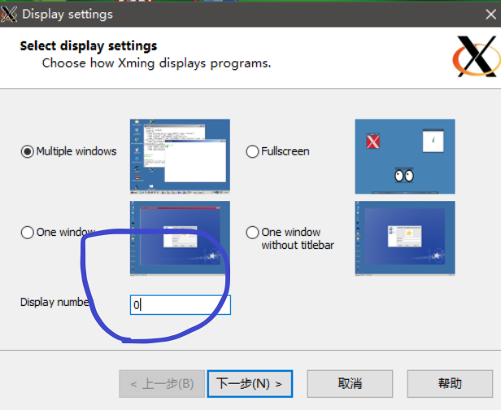
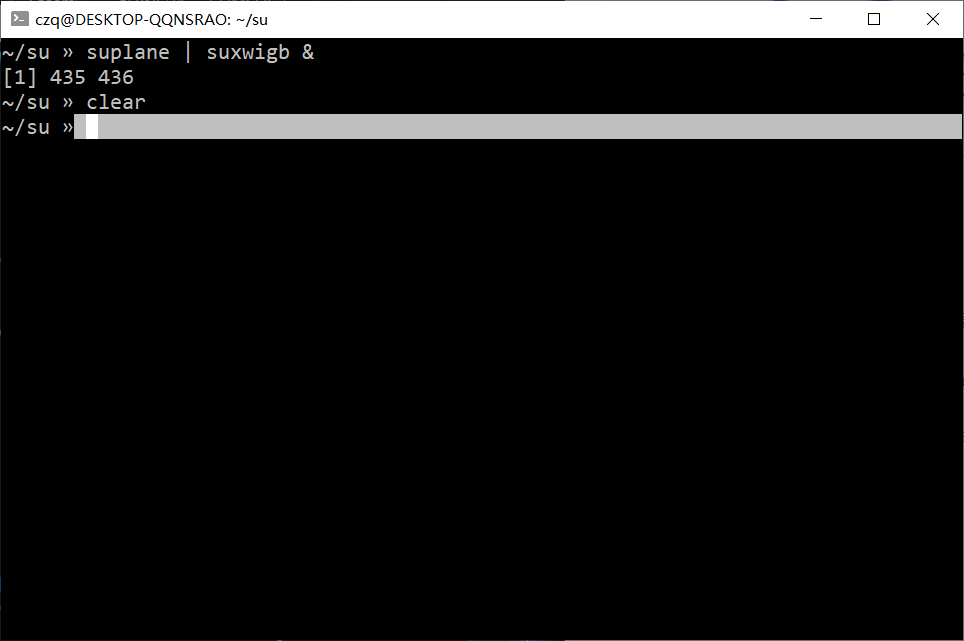
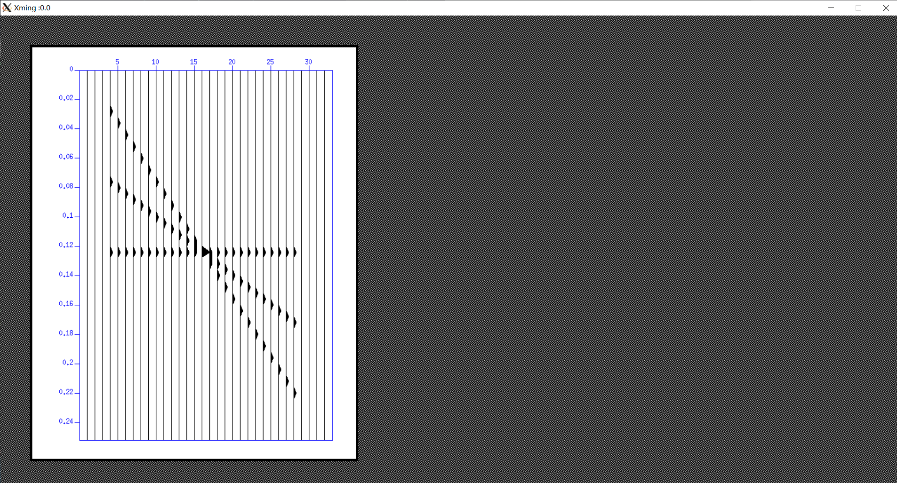

WSL安装图形界面及CWPSU的运行
前情提要
我们之前在WSL上安装CWPSU时，出现报错
1 | sh1: cannot connect to display! |
的情况，本期就来解决这个问题。
我们已经安装好了CWPSU所需要的依赖包
1 | sudo apt install libx11-dev libc6 freeglut3-dev libmotif4 libxt6 x11proto-print-dev libmotif-dev libxi-dev libxmu-dev |
我们需要做的，就是给WSL装一个图形界面。
WSL安装图形界面
网上基本有Xming和VNC的教程，有的说VNC会比较快些，不过博主没有用过，不太确定。
Xming比较简单，使用体验目前来讲也比较好，所以本文只对Xming做解释
安装
首先到官网安装Xming，给出链接
下载好后直接安装
WSL配置
我们回到主目录，打开.bashrc或者.zshrc
1 | vim .bashrc |
我们加入一行
1 | export DISPLAY=:0 |
注意这里数字可以自己选，不过要记住，因为后面要配对
这样我们就配置好了
Xming配置
我们安装Xming过程中出现Display setting界面

记得这个地方要和之前的一致，我们这里为0
其他的基本就是直接下一步了
检验
我们上次在WSL里安装了CWPSU，不过报错
1 | sh1:... cannot connect to display! |
我们说这是因为WSL缺少图形界面，现在我们安装了图形界面，那么是时候检验它了。
我们在WSL里输入
1 | suplane | suxwigb & |
此时Terminal并没有报错，而是显示

同时，在Windows下弹出了Xming窗口，出现了我们想要的图片

好的，到这里我们就成功了，现在就可以愉快的在WSL里使用CWPSU了！是不是很简单呢！
那么好的，本期就到这里了，再会！